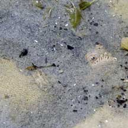
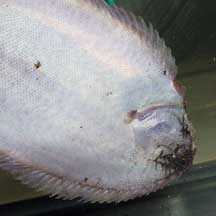
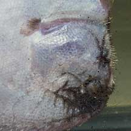
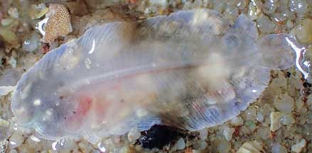
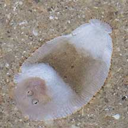

|
|
| fishes text index | photo index |
| Phylum Chordata > Subphylum Vertebrata > fishes |
| Flatfishes Order Pleuronectiformes updated Oct 2020
Where seen? Like animated leaves, these fishes are encountered on many of our shores. Tiny juvenile soles are sometimes seen by the eagle-eyed visitor on the sand, especially in seagrass areas. These may be as tiny as 2cm long. Some small ones may be mistaken for flatworms! Larger adults (20-40cm) are sometimes encountered too, usually when they are accidentally stepped upon. What are flatfishes? Flatfishes belong to the Order Pleuronectiformes. These fishes are flat, with eyes on one side of their body. The underside or blind side tends to be flat and pale. The eyed side has camouflaging colours and patterns. Many flatfishes can change the colours and patterns of the eyed side to blend in with their surroundings. Some species are banded like a zebra on the eyed side! Winning at the Bottom: Adapted for life on the sea bottom, flatfishes have been observed 'creeping' along the bottom using the fins that edge the body. They swim by undulating their bodies. What do they eat? The adult flatfish is an ambush predator. It usually lies just beneath the sediment or sand, with only its eyes sticking out. It snaps up small bottom-dwelling worms, crabs and prawns. It also snacks on buried animals such as bivalves. |
 All that can be seen of the huge buried fish are its eyes! Chek Jawa, Jan 04 |
 The underside is usually pale and unmarked. |
 The pectoral fin on the underside is usually reduced. The mouth on the underside may bristle with tentacles and teeth! |
| Single-sided Fish: Flatfishes undergo an amazing change as they grow up. When it first hatches, a flatfish larva looks like the larva of other 'normal' fish. As the larva matures, it starts to swim on one side of its body. One eye moves to what becomes the upperside, also called the eyed side. The mouth and one pectoral fin also becomes asymmetrically distorted. There are also changes in the skeleton and digestive system. The change may be completed within five days. |
 Juvenile flatfish. St John's Island, Oct 20 Photo shared by Vincent Choo on facebook. |
 Unidentified juvenile Sole? Tanah Merah, May 11 |
| Roving eye: If the right eye migrates to the left side,
the flatfish is left-eyed (sinistral). If the left eye migrates to
the right side, the fish is right-eyed (dextral). Left-eyed flatfish
include the Family Paralichthyidae (lefteye flounders). Right-eyed
flatfish include the Family Pleuronectidae (righteye flounders); Family
Soleidae (true soles) and Family Cynoglossidae (tongue-soles). Here's
more on how to tell apart flatfish
families commonly seen on our shores. Human uses: Many flatfishes are edible and some species are important commercially. Soles are said to retain their flavour for days. |
| Some flatfishes on Singapore shores |


| Order
Pleuronectiformes recorded for Singapore from Wee Y.C. and Peter K. L. Ng. 1994. A First Look at Biodiversity in Singapore. *Lim, Kelvin K. P. & Jeffrey K. Y. Low, 1998. A Guide to the Common Marine Fishes of Singapore. +Other additiona (Singapore Biodiversity Records, etc).
|
Links
|